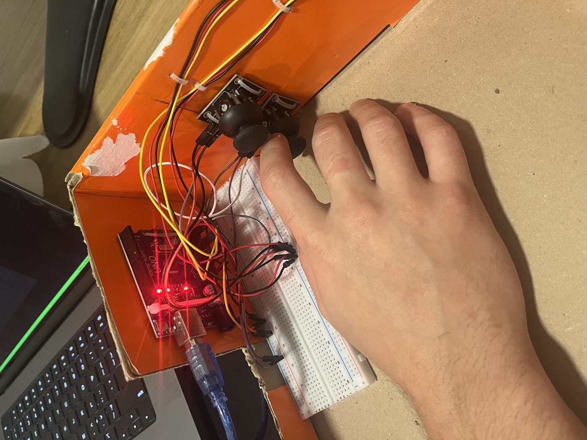
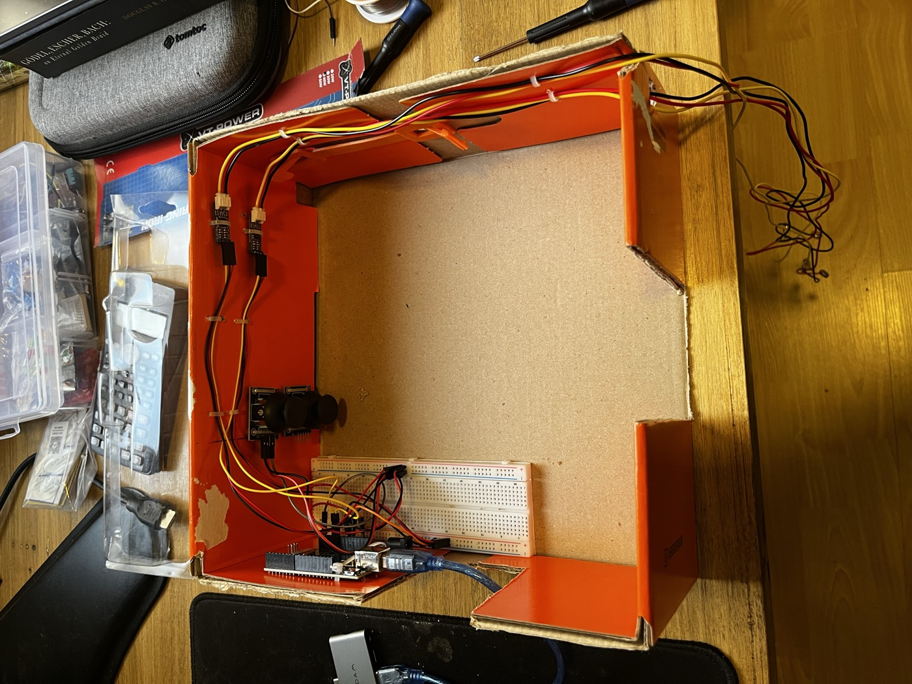
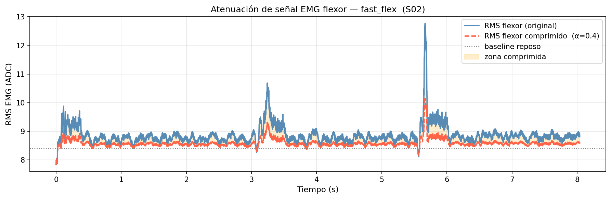
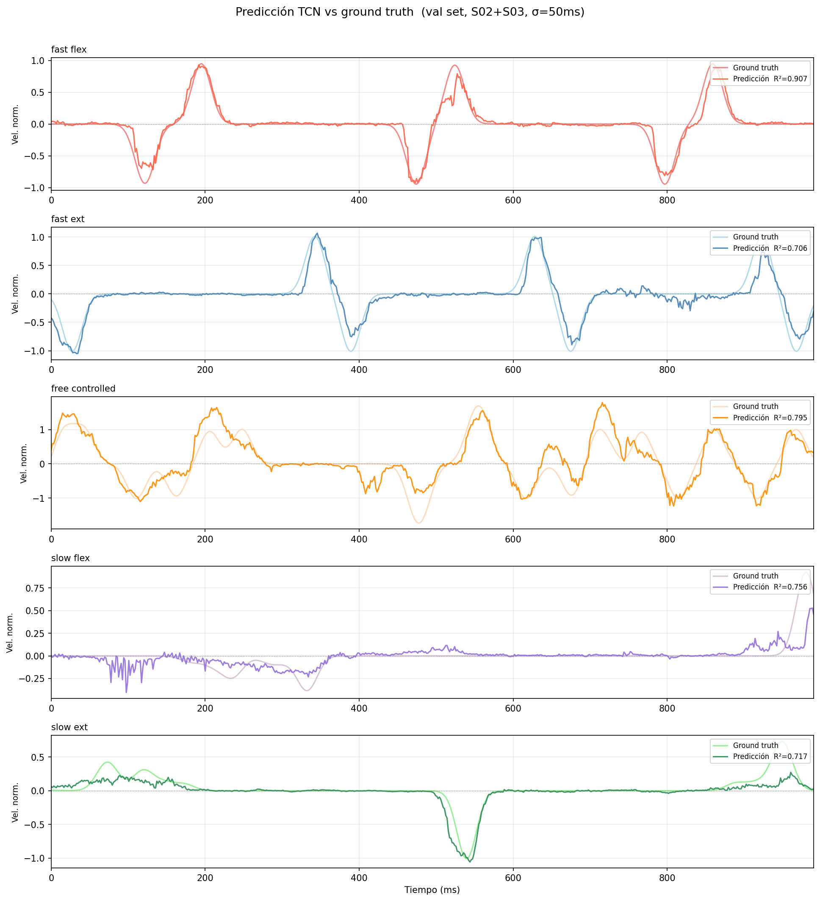
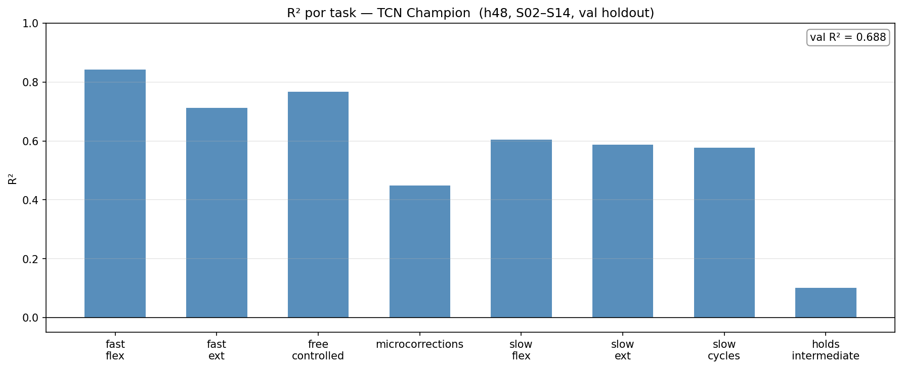
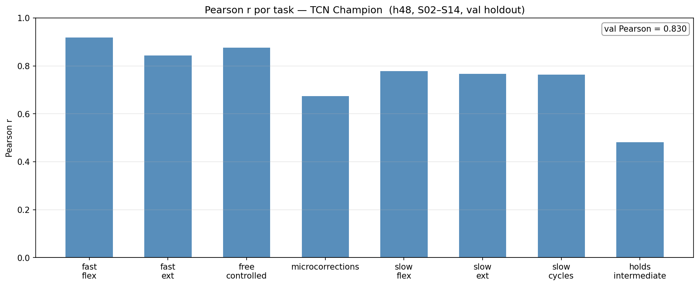

EMG-based continuous movement decoding
A self-built Arduino setup and causal temporal convolutional network for predicting index-finger movement from two surface-EMG channels.
Silent recording: the video shows the finger and the red prediction marker, without a face or audio. The model follows slow and fast movements, broad and short excursions, and visibly discriminates index-finger activity from middle-finger activity in one segment.
The question was simple
Can a low-cost, self-built setup capture enough information from forearm EMG to estimate continuous finger movement in real time?
The current project focuses on acquisition, supervised target construction and online prediction.


The instrument
Two surface-EMG channels record the index-finger flexor and extensor. Two spring-loaded joysticks provide a movement reference during data collection. An Arduino Uno samples the channels at approximately 606 Hz.
The joystick signal is a supervised reference, not a natural or clinical ground truth.
From muscle activity to a position trace
The predictor is a causal Temporal Convolutional Network (TCN). Its dilated convolutions learn from recent EMG history while preventing the model from using future samples, which makes the same architecture usable for online inference.
The target is built offline from the two joystick traces, while the deployed feature extraction and inference remain causal.
The architecture followed the signal analysis
Timing set the model context. Offline onset analysis showed that EMG consistently precedes joystick movement, but with different temporal distributions for flexion and extension. That evidence set the receptive field to span the hundreds of milliseconds needed to capture the relevant pre-movement activity rather than choosing a window arbitrarily.
Features represent two time scales. A causal 70–300 Hz band-pass is followed by fast and slow RMS envelopes and their causal derivatives. The fast scale preserves movement onsets; the slow scale captures sustained activation.
The training target was calibrated too. Early target smoothing attenuated fast movements too aggressively. Reducing that smoothing preserved their velocity peaks, so the TCN was trained against a target whose temporal structure better matched the movement being decoded.
Signal calibration closed the offline–online gap. During collection, the spring-loaded joysticks require extra force and raise EMG amplitude relative to free movement. Models trained directly on those recordings could look acceptable offline but behave poorly online. Compressing training-time EMG peaks above each session’s resting baseline exposed the TCN to amplitudes closer to free online movement; this was the turning point for reliable live behavior, especially at slow movement speeds.

The blue trace is the recorded flexor RMS during joystick collection. The compressed trace is used only during training to reduce spring-induced amplitude inflation; online inference uses the live signal without attenuation.
The selected checkpoint uses a receptive field on the order of several hundred milliseconds. The exact checkpoint and preprocessing commands are linked below.
The benchmark is competitive
The online behavior is the main result of this project. These two numbers summarize the current offline benchmark and help make the evaluation inspectable without standing in for the demo.
What is being measured
The model predicts normalized index-finger velocity from recent EMG. The recordings are divided into separate sessions: independent recording days or runs with a new setup of the electrodes and tasks. Each session contains several movement tasks so the evaluation is not dominated by a single easy trace.
R² asks how much variance in the target velocity is explained by the prediction. Pearson correlation asks whether predicted and target traces follow the same temporal shape, even when their scale differs.
For each task block within each session, the final 20% of windows is reserved for validation. The causal receptive field is respected so a training window cannot use signal from the future.

The model follows the broad direction of the movement; holds remain harder because the spring-loaded joystick decouples force from position.

R² is highest for fast flexion and free controlled movement. Microcorrections are harder, while intermediate holds are the clear low point.

The same ordering appears in temporal alignment: the model tracks the shape of fast and free movements well, but captures holds less reliably.
The online behavior is visible
The recording below gives a second view of the same working setup. It begins with the joystick target shown in green; that reference is then removed so the online prediction can be read on its own.
What is established, and what comes next
Established
- The model works reliably enough to follow slow, fast, broad and short movements online.
- The causal TCN is compact enough for microcontroller deployment with reasonable response times.
- The results are competitive for a low-spatial-resolution setup with a limited number of EMG channels.
Still open
- Generalizing the problem from one finger to multiple fingers.
- Understanding how additional electrodes and spatial information change the decoding problem.
- Testing the same approach across a broader range of movement conditions and participants.
Technical notes
Inputs combine fast and slow RMS envelopes with their temporal derivatives. The full checkpoint configuration, training command and collection protocol are available in the repository.